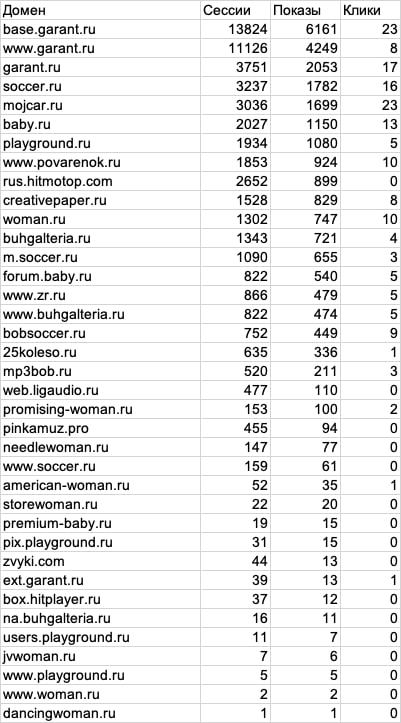

High-impact
formats
Interactive mobile and desktop builds: skins, in-read, page grabbers and banners.
↘Interactive advertising, AdTech and AI automation. From motion design and HTML5 banners to campaign delivery, measurement and optimization.
Interactive mobile and desktop builds: skins, in-read, page grabbers and banners.
↘Motion design and promotional-video production for campaign launches, from storyboarding to final render.
↘Campaign delivery and monitoring, inventory optimization, post-click analytics, CRM and call-tracking attribution.
↘Hands-on use of generative tools and mentoring for the production team.
↘A corporate desktop tool for preparing and sending email campaigns through IMAP.
↘LLM-agent research, AI animation and experiments in layout automation.
↘Started in a press office as a Marketing & PR Specialist, then moved into motion design, HTML5 and rich-media development, ad operations and performance analysis across 100+ campaigns. Today I combine creative production, publisher development and AI-enabled workflows.
Developed content strategy and coordinated media teams, designers, videographers and external digital and PR agencies. Managed two Telegram channels, a Yandex Zen publication and VK communities; tracked audience performance, paid social and community signals, identified news hooks and prepared campaign reports.
Sourced and assessed 1,000+ digital publishers, developed partner relationships, and prepared qualified inventory for programmatic onboarding. Worked with DSP and campaign teams to review supply quality and support campaign launches.
Created book illustrations and production-ready visual systems with generative AI. Built ComfyUI and local-model workflows, LoRA setups and automated prompt pipelines—reducing manual production effort by roughly 90%.
Selected projects from 100+ advertising campaigns. Open a demo in a new window to see each format in its natural environment.
Archived publisher-level extract: sessions, impressions and clicks. This view shows where delivery is generating traffic and which publishers need optimization.
CTR by impressions: 0.66%. Calculated from the supplied archived report.

My scope of work included campaign delivery and monitoring, publisher evaluation, inventory optimization, and connecting post-click events with CRM and call tracking.
This is the original data extract, not a fabricated dashboard. Click the image to view it in full.Prepared and led a hands-on training session on AI tools for the production team. Demonstrated asset and video generation for advertising creatives, especially for clients without a brand book or source materials.

This ComfyUI workflow generates static assets while maintaining object consistency. Completed images are exported to a working folder and then assembled into an HTML creative.
My role: process setup, hands-on training and production-team mentoring.Corporate email delivery tool with sender profiles, mail-provider connections, templates, attachments, sending limits, an activity log and IMAP archive saving.

Unpublished research on LLM-based multi-agent systems in political analysis. Alongside it, I explore AI animation, layout automation and illustration generation for editorial projects.

In Higgsfield, I produced visual assets for a book: decorative initials, scenes, characters and spreads in one consistent visual language.
AI-assisted editorial production / visual consistency across the book.